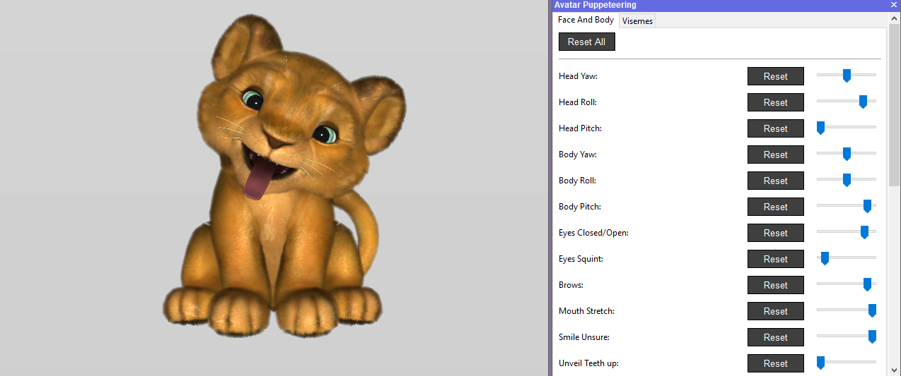
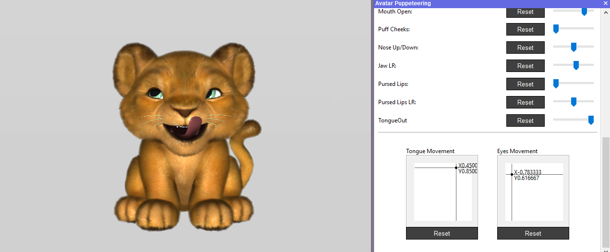
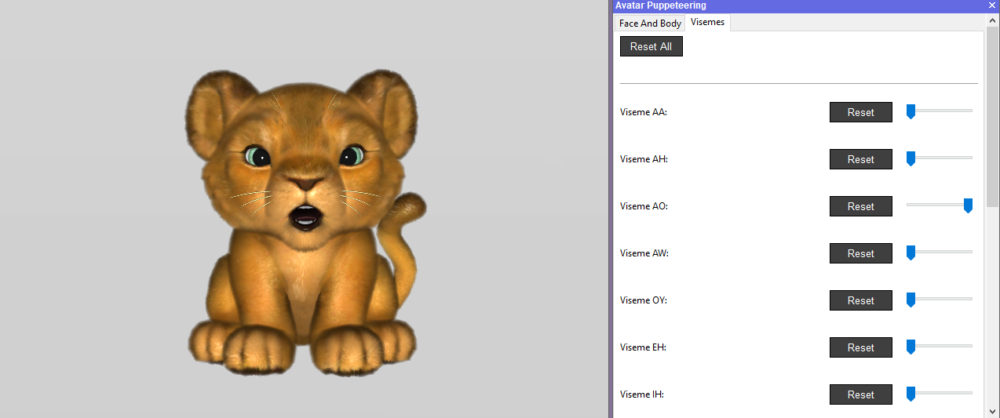
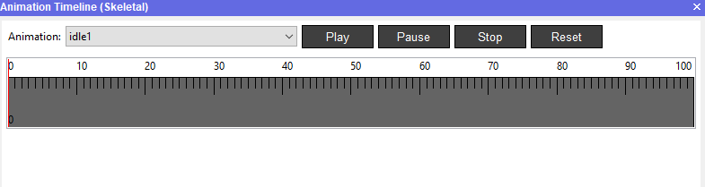
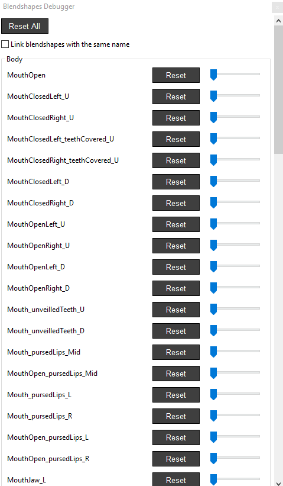
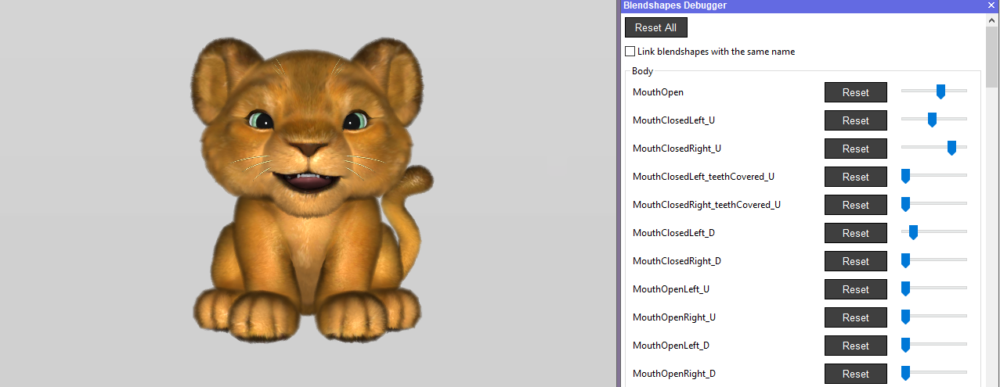
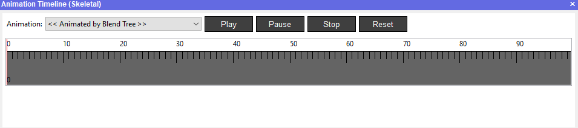
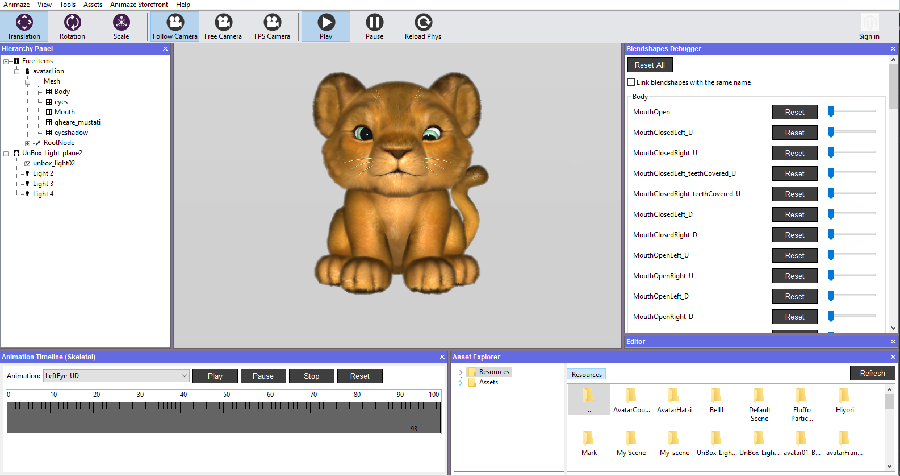

How do I use the Debugging Tools?
The Avatar Puppeteering, Blendshapes Debugger and the Animation Timeline are tools that help debugging avatar's animations regardless their type: skeletal or blendshape.
Animaze uses animation atomics retargeting method for mapping user face tracking (not limited to face, could be body tracking, audio tracking, etc.) to the avatars movements. Animation atomics indicates that an avatar expression is made up of a set of simple - atomic - animations, each atomic animation only moves/animates a specific part of the avatar.
The Animaze systems currently support only .FBX as input format for geometry and animations, with these being in separate files. Geometry kept in a single file, while each animation also exported into a single file.
The Animaze systems do not support multiple animation clips in a single FBX file. Future releases of the Animaze Editor will support various 3D geometry and animation formats.
Animations will be done differently, depending on the animation method you want to use: skeletal, blendshapes or both.
Avatar Puppeteering
To check the animated behavior of your model, import it in the Animaze Editor and then follow these steps:
- Go to Tools menu and select Avatar Puppeteering
- Toggle the sliders to test the behavior in the Face And Body and Viseme tabs and see how the avatar behaves

- Click and hold the Tongue and Eyes Movement axis points and move them around

- Some of the animations are linked together, as in, they only activate in certain scenarios. For example, Pursed Lips LR will have no effect unless the slider for Pursed Lips is activated first.
- The visemes can be checked one by one, because activating more at once will result in irrelevant deformations

Blendshapes Debugger
Most of the skeletal animations have a blendshape correspondent. To see how they behave on your model, import it in Animaze Editor and follow these steps:
- In order to have the debugger activated, you will need to select idle1 in the Animation Timeline tree.

- Go to Tools menu and select Blendshapes debugger

- Now slide the bars of each blendshape in the list and see how your avatar behaves

Animation Timeline
To view every skeletal animation of your model separately, import the avatar in the Animaze Editor and then follow these steps:
- Animation Timeline is by default opened at start of the Animaze Editor, but it can also be found in the View menu > Animation Timeline (Skeletal)

- Open the Animation list and use Play button to view how your model behaves. The keyframes for each animation appears in this timeline.

- The Reset button will set the animation on Animated by Pupeteer mode
Note that for the models built with blendshapes, the animation will be played in its raw state. For example, when playing the Tongue Out animation, the model will not open his mouth to stick out the tongue, but it will pass through the closed mouth.